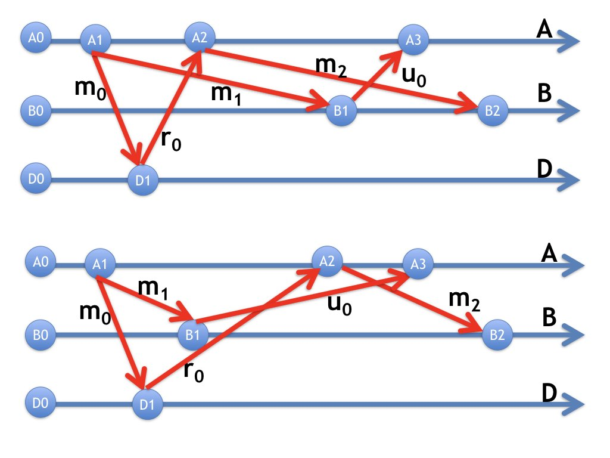
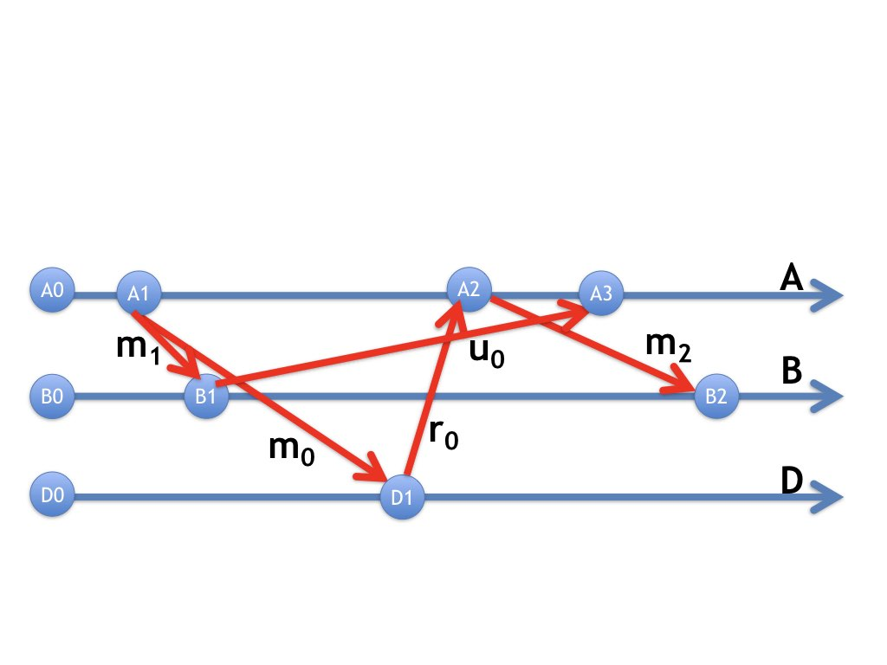
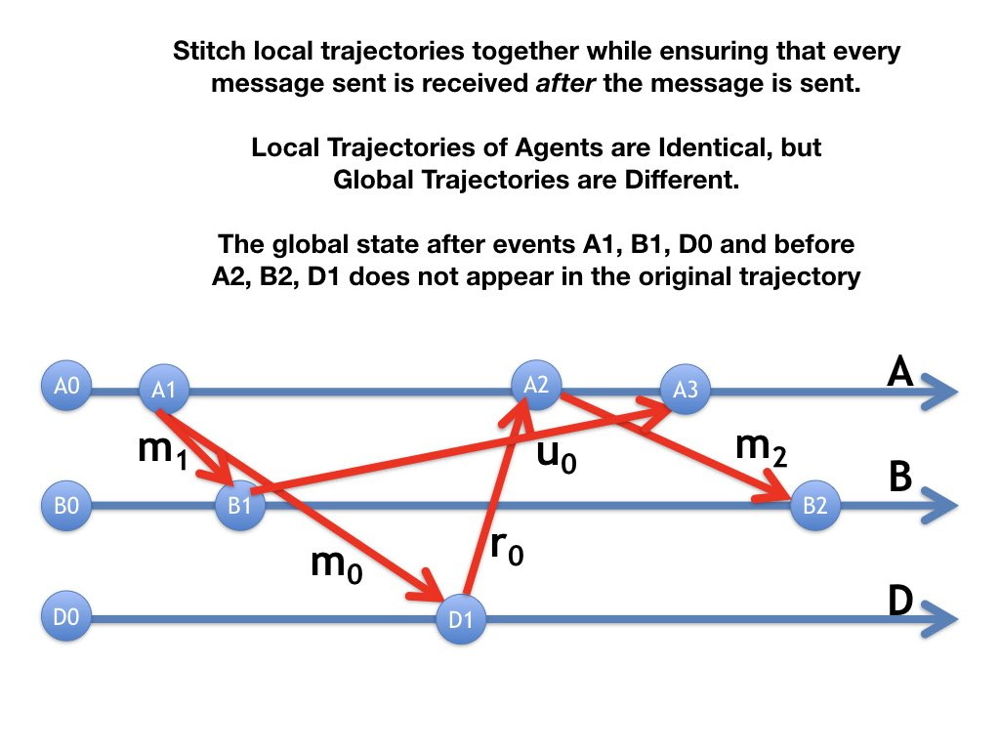

Let's look at the problem of reconstructing a log of events of the
global system given logs recorded by each agent of that agent's own
events.
Each agent records the sequence of events at that agent, and its own
local state before each event, and the messages sent and received (if
any) in each of its events.
In terms of a
timeline diagram, each agent records the labeled edges directed towards
and away from each of the agent's events (see figure below).
Example
The figure below shows logs of each of the three agents in the example
given in the Timelines module.
Fig.1: Logs of Agents
What global system trajectories can produce this collection of agent
logs?
In the Timelines module we saw at least two ways of composing the
agent logs. The two timelines are given again below

Fig.2: Different Timelines Composed from Same Logs of Agents
The theorem tells us that any global sequence of events represents a
system trajectory if and only if:
each message is received after it is sent.
Example
Here is another timeline diagram that satisfies this requirement.

Fig.3: One More Timeline Composed Logs of Agents
Cuts across Timelines
A consistent cut of a timeline diagram is a partition of the set
of events in the trajectory into past and future where
there is no edge from the future to the past.
Example
The figure below shows consistent cuts across two timeline diagrams
where past events are colored black and future events are green.
There is no edge directed from green to black.

Fig.4: Consistent Cuts
Each agent has a point on its own timeline where events on that
agent before the point are in the past, and events on that
agent after the point are in the future.
Theorem about Consistent Cuts
For any consistent cut, \([past, future]\), of a timeline diagram of
a trajectory \(\tau\)
there exists a trajectory \(\tau'\) with the same events as \(\tau\)
where all past events occur before all future events in \(\tau'\).
Proof of Theorem on Consistent Cuts
The intuitive idea of the proof is that we can get \(\tau'\), the
lower diagram, from \(\tau\), the upper diagram, by straightening the line
separating future from past in \(\tau\). As the line gets
straightened, some events move towards the right and others to the
left, while maintaining the key requirement that messages are received
only after they are sent.
A formal proof is based on induction in the order of events in
\(\tau'\). Assume that there exists a trajectory, starting from the
initial state, with \(n\) events and prove that there exists a
trajectory with \(n+1\) events.
Takeaway
Local agent trajectories can be stitched together to get global system
trajectories if all messages are received only after they are
sent. This requirement is obvious and useful. It leads to the theorem
on consistent cuts, which is the key to many algorithms by which an
agent learns properties of an entire system.